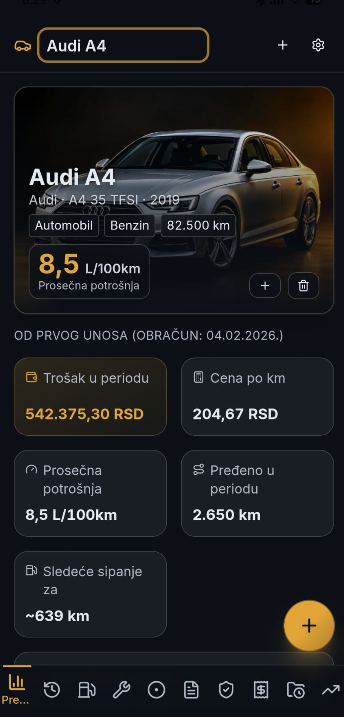
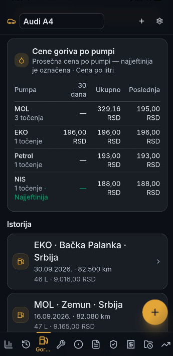
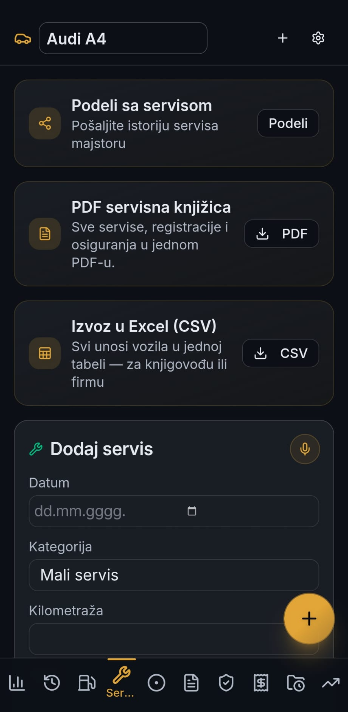

Gorivo i potrošnja
Točenje i punjenje, cene po pumpi i prosečna potrošnja.
Privatna evidencija vozila
Sve o vozilu. Bez zaboravljanja.
Gorivo, servisi, gume, troškovi, dokumenti i rokovi — pregledno, privatno i uvek uz vas.

Kompletna evidencija
Točenje i punjenje, cene po pumpi i prosečna potrošnja.
Istorija radova, servisni intervali, gume i traktorski servisi po radnim satima.
Registracija, osiguranje, dokumenti i vinjete sa statusima i podsetnicima.
Troškovi po kategoriji i periodu u RSD, EUR, BAM, USD ili AUD, uz sačuvan kurs i CSV izvoz.
Izgovorite unos na jednom od pet jezika, uz srpski u oba pisma; pregledajte popunjena polja pre čuvanja.
Uparite telefone i tablete QR kodom i delite izabrana vozila na istoj Wi-Fi mreži, bez cloud sinhronizacije.
Podsetnici po datumu, kilometrima ili radnim satima; widget pokazuje sledeći rok.
Jedna aplikacija za svako vozilo
Verzija 1.3.1 — novosti
Ovo ažuriranje poboljšava Wi-Fi sinhronizaciju i proveru rezultata. Ostale mogućnosti aplikacije ostaju iste.
Delite izabrana vozila i njihove unose između Android i Apple telefona i tableta na istoj Wi-Fi mreži, bez naloga i cloud sinhronizacije.
Nakon čuvanja aplikacija poredi sadržaj izabranih podataka na oba uređaja. Ako pronađe razliku, pokušava ponovni prenos pre potvrde uspeha.
Poruke razlikuju potvrđen prenos od prekida, nepoklapanja podataka ili problema sa čuvanjem. Za ovu proveru koristite verziju 1.3.1 na oba uređaja i držite aplikaciju otvorenu.
Ažurirano 05.11.2026. · Google Play i App Store: 1.3.1
Prikazi aplikacije


02 / Stvaran pregled aplikacije
Pratite troškove, kategorije i periode bez ručnog sabiranja. Poseban prikaz za traktore prati servis po radnim satima, dok su podaci i izveštaji uvek nadohvat ruke.
03 / Privatno po dizajnu
Bez naloga, cloud sinhronizacije, oglasa i praćenja. Evidencija se čuva lokalno na uređaju, a osnovne funkcije rade bez interneta.
Pročitajte politiku privatnostiJednostavna cena
1,99 €
Jednokratna kupovina · bez pretplate i reklama.
04 / FAQ
Ne. Plaćate 1,99 € jednom i dobijate kompletnu aplikaciju.
Da. Sve osnovne funkcije rade offline. Internet je opcionalan za osvežavanje kursa valuta.
Lokalno na vašem uređaju, bez cloud sinhronizacije.